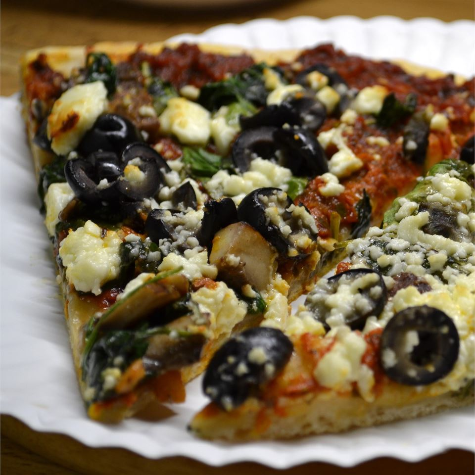

Pizza Without The Red Sauce

Description
I do not like red sauce but pizza is one of my favorite foods.
So I came up with this good alternative to traditional red sauce pizza.
It still a light tomato taste.
Ingredients
- 2 Tablespoons butther, melted
- 1 Tablespoon plive oil
- 3 Tablespoons minced garlic
- 2 Tablespoons sun-dried tomato pesto
- 1 Teaspoon dried basil leaves
- 1 Teaspoon dried oregano
- 1 Tablespoon grated Parmesan cheese
- 1 Unbaked pizza crust
- 1 Tomato, sliced
- 1 Bunch fresh spinach, torn
- 1 Sweet onion, sliced
- 1 Fresh jalapeno pepper,chopped
- 1 (6 ounce) package feta cheese, crumbled
Preparation
-
Step 1
Preheat oven according to pizza crust package directions.
-
Step 2
In a small bowl combine butter, olive oil, garlic, pesto, basil, oregano and Parmesan
cheese. Spread mixture evenly on pizza crust.
-
Step 3
Arrange tomato, spinach, onion and jalapeno on pizza. Top with crumbled fetacheese.
-
Step 4
Bake according to pizza crust package directions.